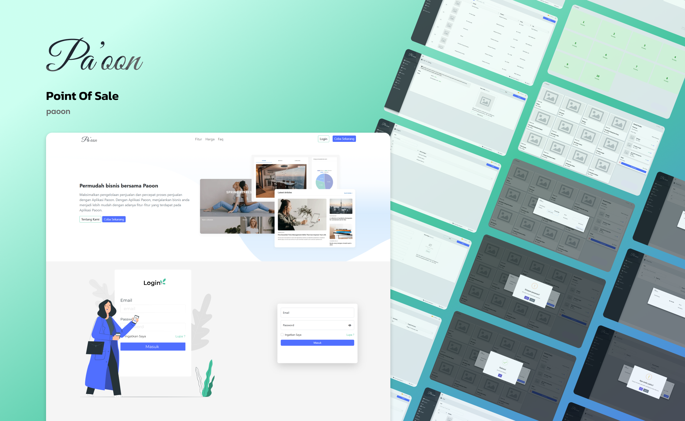

Kecepatan dan akurasi data merupakan fondasi utama dalam operasional bisnis modern. Pa'oon hadir sebagai aplikasi Point of Sale berbasis web yang meredefinisi cara pelaku usaha mengelola transaksi, memantau inventaris, dan menganalisis performa penjualan dalam satu ekosistem digital yang intuitif.

Pratinjau antarmuka aplikasi Pa'oon, mulai dari halaman utama hingga arsitektur dasbor.
Pertumbuhan sektor bisnis ritel dan usaha mikro, kecil, dan menengah menuntut adanya adaptasi teknologi yang cepat. Dalam skala operasional harian, proses pencatatan transaksi yang dilakukan secara manual sering kali menjadi titik lemah yang memicu berbagai masalah sistemik. Keakuratan data sangat krusial untuk memastikan kelangsungan dan skalabilitas sebuah usaha.
Pa'oon dikembangkan dengan pendekatan analisis sistem informasi yang terstruktur. Aplikasi ini dirancang untuk mengambil alih beban pencatatan manual dan mengubahnya menjadi proses komputasi yang efisien, aman, dan mudah dipahami oleh pengguna dari berbagai latar belakang teknis.
Pemilik usaha sering kali menghadapi hambatan dalam mengelola alur transaksi kasir. Pendataan barang yang keluar masuk secara konvensional menggunakan buku besar atau lembar lajur sederhana rentan terhadap kesalahan manusiawi. Kesalahan kalkulasi tersebut dapat berujung pada selisih laporan keuangan dan ketidakakuratan stok barang di gudang. Selain itu, pemilik usaha membutuhkan waktu yang lama untuk menyusun laporan performa penjualan pada akhir bulan. Ketiadaan akses terhadap data yang terpusat membuat pengambilan keputusan bisnis menjadi lambat dan tidak berdasarkan fakta empiris di lapangan.
Untuk menghadirkan aplikasi yang andal dan memiliki performa tinggi, pengembangan Pa'oon dibagi ke dalam dua disiplin utama, yaitu perancangan antarmuka pengguna dan pembangunan sistem arsitektur bagian belakang.
Berbekal pemahaman mengenai perilaku kasir yang membutuhkan kecepatan akses, antarmuka Pa'oon dirancang dengan prinsip minimalisme dan fungsionalitas tinggi. Pemilihan palet warna hijau mint yang sejuk dipadukan dengan ruang kosong yang luas bertujuan untuk mengurangi kelelahan mata pengguna saat menatap layar dalam durasi yang panjang.
Tipografi dan Tata Letak: Elemen navigasi ditempatkan secara logis. Halaman informasi produk menampilkan tipografi tebal untuk menonjolkan fitur, sedangkan halaman formulir autentikasi dibuat
terpusat untuk memusatkan perhatian pengguna.
Ilustrasi Visual: Saya menggunakan ilustrasi vektor bergaya modern untuk memandu pengguna pada halaman masuk sistem dan halaman pemulihan kata sandi. Hal ini memberikan sentuhan manusiawi
pada perangkat lunak yang bersifat kaku.
Purwarupa Hierarki Dasbor: Pembuatan kerangka kerja struktur dasbor dilakukan secara komprehensif. Susunan tabel, kartu analitik, dan modul inventaris dirancang konsisten agar pengguna dapat
dengan mudah mempelajari alur kerja aplikasi.
Konstruksi aplikasi ini menggunakan bahasa pemrograman PHP yang beroperasi pada lingkungan server yang dikonfigurasi secara optimal. Sistem ini dibangun dengan skema basis data relasional MySQL yang menautkan entitas produk, transaksi, dan data pengguna secara terstruktur.
Implementasi logika bisnis di sisi peladen mencakup pengamanan kata sandi menggunakan enkripsi kriptografi, serta pengelolaan sesi yang memastikan hanya pengguna berwenang yang dapat mengakses dasbor manajerial. Tampilan antarmuka depan juga dikembangkan agar sangat responsif terhadap berbagai ukuran monitor kasir.
Sistem ini tidak hanya berfungsi sebagai mesin hitung, melainkan sebagai pusat kendali operasional. Beberapa modul utama yang diimplementasikan meliputi:
Projects pengembangan Pa'oon membuktikan bahwa perancangan antarmuka yang estetis harus senantiasa sejalan dengan arsitektur pangkalan data yang kokoh.
Melalui pemanfaatan aplikasi ini, pelaku usaha mampu memangkas waktu rekapitulasi data secara drastis, menghindari kerugian finansial akibat kesalahan perhitungan manual, serta mendapatkan kendali penuh atas informasi usahanya. Penerapan sistem informasi ini menjadi langkah awal yang esensial bagi bisnis konvensional untuk bertransformasi dan bersaing pada era niaga digital.